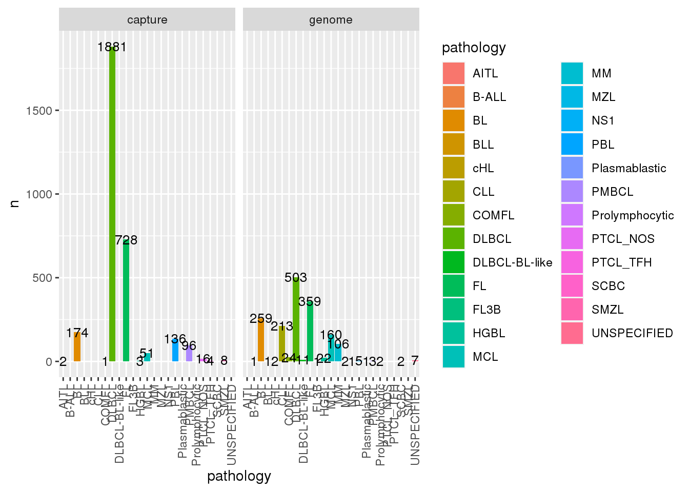
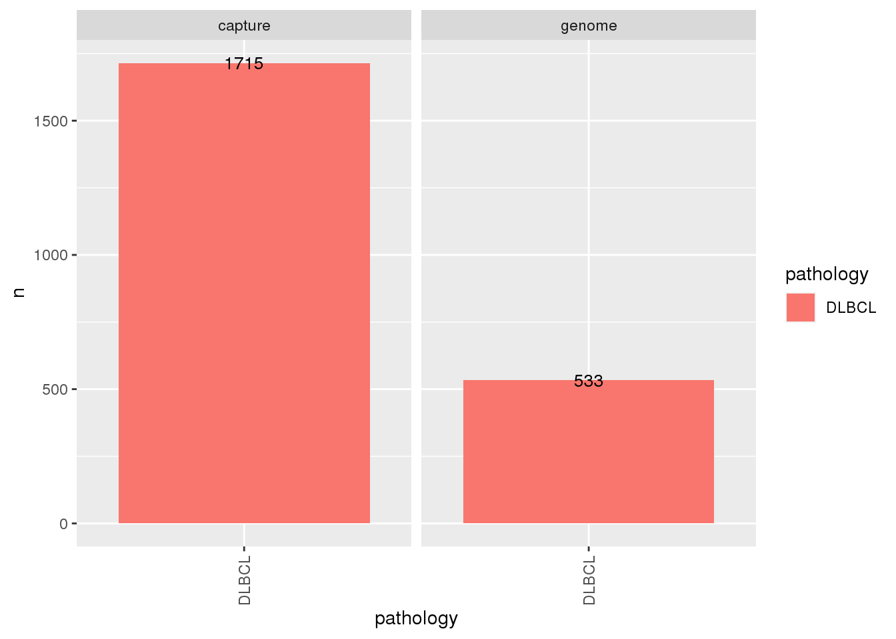
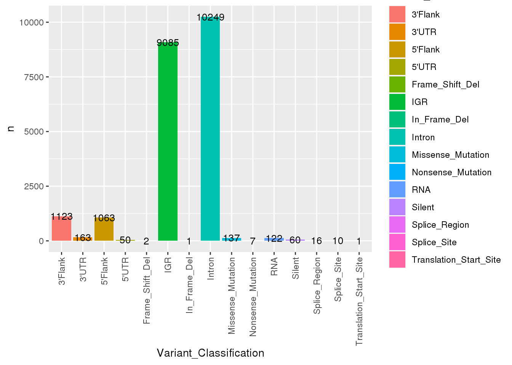
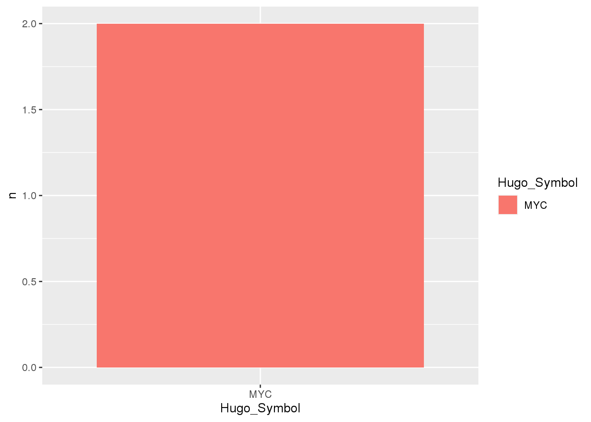
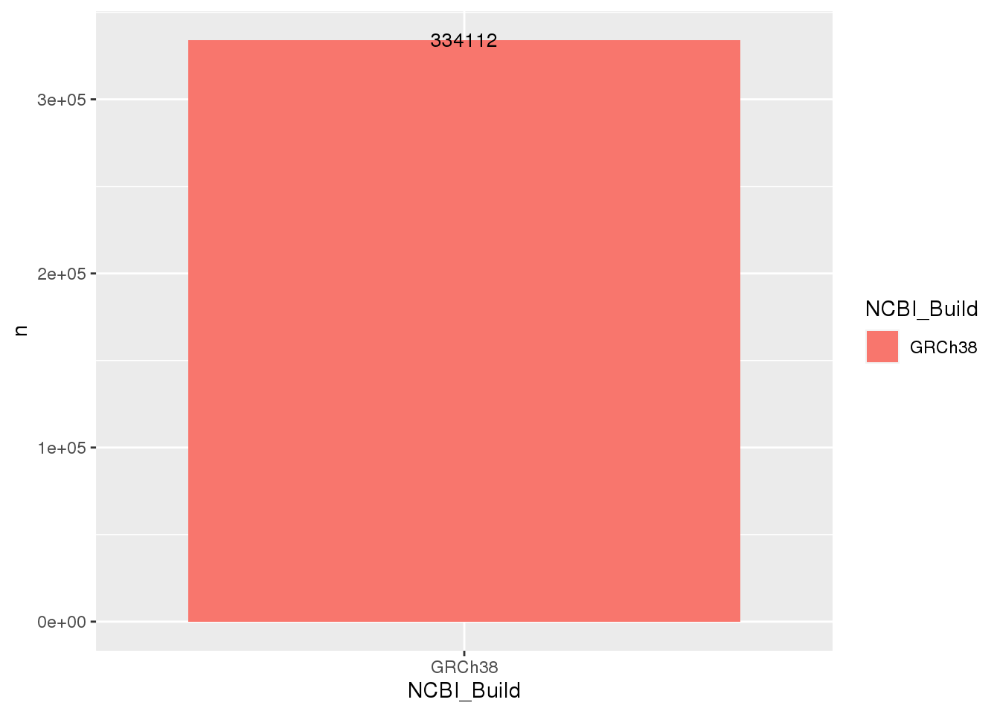
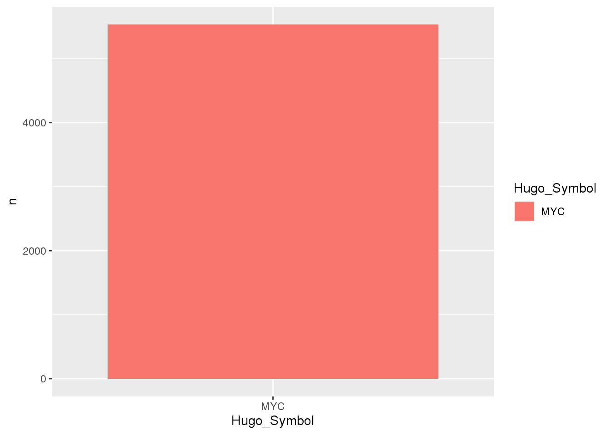

#Load packages
library(GAMBLR.data)
library(tidyverse)Tutorial: getting started
This is a quick tour of some basic commands and usage patterns, just to get you started.
This tutorial explores how to retrieve different data types bundled withing GAMBLR.data. Commonly, such GAMBLR functions are prefixed with get_. These functions are readily available for returning data of different types: Simple Somatic Mutations (SSM), Copy Number (CN) segments and Structural Variants (SV). This resource explores commonly occurring arguments across different functions, best-practices and recommendations in the scope of retrieving data.
How do I obtain metadata?
First, lets start with retrieving metadata for all GAMBL samples. We can control which samples to be included in the output with seq_type_filter argument, which returns genome samples by default. To return metadata for capture samples, set seq_type_filter = "capture". It is also possible to return metadata for more than one seq type, e.g seq_type_filter = c("genome", "capture").
metadata <- list()
#Get gambl metadata for genome samples
metadata$genomes <- get_gambl_metadata(
seq_type_filter = "genome"
)
metadata$capture <- get_gambl_metadata(
seq_type_filter = "capture"
)
metadata$all <- get_gambl_metadata(
seq_type_filter = c("genome", "capture")
)Now that we have the metadata, it can illustrate what are the expected column names and their format:
str(metadata$all)tibble [4,785 × 27] (S3: tbl_df/tbl/data.frame)
$ sample_id : chr [1:4785] "00-14595_tumorA" "00-14595_tumorB" "00-14595_tumorC" "00-14595_tumorD" ...
$ patient_id : chr [1:4785] "00-14595" "00-14595" "00-14595" "00-14595" ...
$ pathology : chr [1:4785] "COMFL" "COMFL" "DLBCL" "FL" ...
$ seq_type : chr [1:4785] "genome" "genome" "genome" "genome" ...
$ genome_build : chr [1:4785] "grch37" "grch37" "grch37" "grch37" ...
$ pairing_status : chr [1:4785] "matched" "matched" "matched" "matched" ...
$ Tumor_Sample_Barcode: chr [1:4785] "00-14595_tumorA" "00-14595_tumorB" "00-14595_tumorC" "00-14595_tumorD" ...
$ age_group : chr [1:4785] "Other" "Other" "Other" "Other" ...
$ compression : chr [1:4785] "bam" "cram" "cram" "cram" ...
$ bam_available : logi [1:4785] TRUE TRUE TRUE TRUE TRUE TRUE ...
$ pathology_rank : num [1:4785] 13 13 19 15 19 19 15 27 19 19 ...
$ cohort : chr [1:4785] "DLBCL_LSARP_Trios" "DLBCL_LSARP_Trios" "DLBCL_LSARP_Trios" "DLBCL_LSARP_Trios" ...
$ COO_consensus : chr [1:4785] "GCB" "GCB" "GCB" "GCB" ...
$ DHITsig_consensus : chr [1:4785] "DHITsigNeg" "DHITsigPos" "DHITsig-IND" "DHITsig-IND" ...
$ EBV_status_inf : chr [1:4785] NA NA NA NA ...
$ ffpe_or_frozen : chr [1:4785] "FFPE" "FFPE" "FFPE" "FFPE" ...
$ fl_grade : chr [1:4785] NA NA NA NA ...
$ hiv_status : chr [1:4785] "UNKNOWN" "UNKNOWN" "UNKNOWN" "UNKNOWN" ...
$ lymphgen : Factor w/ 12 levels "EZB","EZB-COMP",..: 1 1 1 1 12 7 1 12 NA 1 ...
$ lymphgen_cnv_noA53 : chr [1:4785] "EZB" "EZB" "EZB" "EZB" ...
$ lymphgen_no_cnv : chr [1:4785] "EZB" "EZB" "EZB" "EZB" ...
$ lymphgen_with_cnv : chr [1:4785] "EZB" "EZB" "EZB" "EZB" ...
$ lymphgen_wright : chr [1:4785] NA NA NA NA ...
$ molecular_BL : chr [1:4785] NA NA NA NA ...
$ normal_sample_id : chr [1:4785] "00-14595_normal" "00-14595_normal" "00-14595_normal" "00-14595_normal" ...
$ sex : chr [1:4785] "F" "F" "F" "F" ...
$ time_point : chr [1:4785] "A" "B" "C" "D" ...We can now use the metadata as we wish, for example see what pathologies are available and do any sort of subsetting.
#We can see what is included in the metadata
metadata$all %>%
count(pathology, seq_type) %>%
ggplot(
aes(
x = pathology,
y = n,
fill = pathology
)
) +
geom_bar(stat = "identity") +
facet_wrap(~seq_type) +
geom_text(aes(label=n), size=3.5)+
theme(
axis.text.x = element_text(
angle = 90,
vjust = 0.5,
hjust = 1
)
)
#Subset metadata on a set of samples (samples classified as DLBCL for pathology)
metadata$dlbcl <- metadata$all %>%
filter(pathology == "DLBCL")
#Quick sanity check
metadata$dlbcl %>%
count(pathology, seq_type) %>%
ggplot(
aes(
x = pathology,
y = n,
fill = pathology
)
) +
geom_bar(stat = "identity") +
facet_wrap(~seq_type) +
geom_text(aes(label=n), size=3.5)+
theme(
axis.text.x = element_text(
angle = 90,
vjust = 0.5,
hjust = 1
)
)
How do I obtain SSM?
Based on the information available to the user, application, or downstream analysis, there are multiple ways to retrieve SSM data. For example, if the user knows the sample ID and is only interested in looking at SSM results for that particular sample, one can use get_ssm_by_sample. If multiple samples are to be analyzed, get_ssm_by_samples (plural version) is recommended. The user can also use patient IDs for retrieving this data, in this case get_ssm_by_patients is available. In addition, the user can also restrict SSM calls to specific genomic regions with get_ssm_by_regions or get_ssm_by_region.
Another possibility is to focus on coding mutations only and call get_coding_ssm, this function returns all coding SSMs from the bundled data in MAF-like format. If the user have an already pre-filtered metadata, the these_samples_metadata argument can be used with all SSM functions to restrict the variants returned to the sample IDs in this data frame, handy!
By Samples
Return SSMs for one or more samples with get_ssm_by_samples. In the example below, we are requesting SSM for the DOHH-2 cell line in two different ways:
Using these_sample_ids
my_sample_id <- "DOHH-2"
# Using the these_samples_id argument
ssm_sample <- get_ssm_by_samples(these_sample_ids = my_sample_id)
#How manny mutations do we get back?
dim(ssm_sample)[1] 22137 45#What columns are available?
colnames(ssm_sample) [1] "Hugo_Symbol" "Entrez_Gene_Id"
[3] "Center" "NCBI_Build"
[5] "Chromosome" "Start_Position"
[7] "End_Position" "Strand"
[9] "Variant_Classification" "Variant_Type"
[11] "Reference_Allele" "Tumor_Seq_Allele1"
[13] "Tumor_Seq_Allele2" "dbSNP_RS"
[15] "dbSNP_Val_Status" "Tumor_Sample_Barcode"
[17] "Matched_Norm_Sample_Barcode" "Match_Norm_Seq_Allele1"
[19] "Match_Norm_Seq_Allele2" "Tumor_Validation_Allele1"
[21] "Tumor_Validation_Allele2" "Match_Norm_Validation_Allele1"
[23] "Match_Norm_Validation_Allele2" "Verification_Status"
[25] "Validation_Status" "Mutation_Status"
[27] "Sequencing_Phase" "Sequence_Source"
[29] "Validation_Method" "Score"
[31] "BAM_File" "Sequencer"
[33] "Tumor_Sample_UUID" "Matched_Norm_Sample_UUID"
[35] "HGVSc" "HGVSp"
[37] "HGVSp_Short" "Transcript_ID"
[39] "Exon_Number" "t_depth"
[41] "t_ref_count" "t_alt_count"
[43] "n_depth" "n_ref_count"
[45] "n_alt_count" #What variants are the available?
ssm_sample %>%
count(Variant_Classification) %>%
ggplot(
aes(
x = Variant_Classification,
y = n,
fill = Variant_Classification
)
) +
geom_bar(stat = "identity") +
geom_text(aes(label=n), size=3.5)+
theme(
axis.text.x = element_text(
angle = 90,
vjust = 0.5,
hjust = 1
)
)
Using these_samples_metadata
We can supply instead a metadata table that has already been subset to the sample ID(s) of interest.
metadata$dohh2 <- metadata$genome %>%
filter(sample_id == "DOHH-2")
# Using the these_samples_metadata argument
ssm_meta <- get_ssm_by_samples(
these_samples_metadata = metadata$dohh2
)
#How manny mutations do we get back?
dim(ssm_meta)[1] 22137 45#What columns are available?
colnames(ssm_meta) [1] "Hugo_Symbol" "Entrez_Gene_Id"
[3] "Center" "NCBI_Build"
[5] "Chromosome" "Start_Position"
[7] "End_Position" "Strand"
[9] "Variant_Classification" "Variant_Type"
[11] "Reference_Allele" "Tumor_Seq_Allele1"
[13] "Tumor_Seq_Allele2" "dbSNP_RS"
[15] "dbSNP_Val_Status" "Tumor_Sample_Barcode"
[17] "Matched_Norm_Sample_Barcode" "Match_Norm_Seq_Allele1"
[19] "Match_Norm_Seq_Allele2" "Tumor_Validation_Allele1"
[21] "Tumor_Validation_Allele2" "Match_Norm_Validation_Allele1"
[23] "Match_Norm_Validation_Allele2" "Verification_Status"
[25] "Validation_Status" "Mutation_Status"
[27] "Sequencing_Phase" "Sequence_Source"
[29] "Validation_Method" "Score"
[31] "BAM_File" "Sequencer"
[33] "Tumor_Sample_UUID" "Matched_Norm_Sample_UUID"
[35] "HGVSc" "HGVSp"
[37] "HGVSp_Short" "Transcript_ID"
[39] "Exon_Number" "t_depth"
[41] "t_ref_count" "t_alt_count"
[43] "n_depth" "n_ref_count"
[45] "n_alt_count" #What variants are the available?
ssm_meta %>%
count(Variant_Classification) %>%
ggplot(
aes(
x = Variant_Classification,
y = n,
fill = Variant_Classification
)
) +
geom_bar(stat = "identity") +
geom_text(aes(label=n), size=3.5) +
theme(
axis.text.x = element_text(
angle = 90,
vjust = 0.5,
hjust = 1
)
)We can make sure that both approaches generate identical outputs:
identical(
ssm_sample,
ssm_meta
)[1] TRUEThus, there is no “right” or “wrong” way, it is simply your personal preference!
Using these_genes
Returnng maf data for thousands or hundreds of files can be potentially creating memory or space issues to store the Rsession if you are using old-day R editors like RStudio. To facilitate this, you can optionally request the SSM to be returned just for a small number of specific genes with the argument these_genes:
# Only look at specific gene(s)
my_genes <- c("MYC")
ssm_myc <- get_ssm_by_samples(
these_sample_ids = my_sample_id,
these_genes = my_genes
)
ssm_myc %>%
count(Hugo_Symbol) %>%
ggplot(
aes(
x = Hugo_Symbol,
y = n,
fill = Hugo_Symbol
)
) +
geom_bar(stat = "identity")
Using maf_col
Similarly, do decrease the burden of handling large maf data, it is also possible to dictate what MAF columns we want back. To do this, call the function with the maf_col argument and provide vector of the columns of interest. Here, we are requesting SSM calls for only a small set of columns. It is also important to note that this will require setting of another argument basic_columns to FALSE as this argument takes precedence of all other arguments that control output columns and returns first 45 columns of standard maf.
# Define the column names
my_columns <- c(
"Hugo_Symbol",
"Chromosome",
"Start_Position",
"End_Position",
"Tumor_Sample_Barcode",
"Variant_Classification"
)
# Since we don provide neither of arguments that restrict to specific
# samples, we expect the return to contain data from all samples in the bundled
# data
ssm_col <- get_ssm_by_samples(
these_genes = my_genes,
maf_col = my_columns,
basic_columns = FALSE
)
# What are the dimensions for the capture SSM calls?
dim(ssm_col)[1] 3884 6# What are the columns in the output?
colnames(ssm_col)[1] "Hugo_Symbol" "Chromosome" "Start_Position"
[4] "End_Position" "Tumor_Sample_Barcode" "Variant_Classification"In a different projection
Often many downstream tools can only work on one or the other genome buid, and GAMBLR.data provides a simple and straightforward way to obtain variants in different projection. The default output is always wuth respect to grch37, and it can be easily modified with argument projection:
ssm_hg38 <- get_ssm_by_samples(
projection = "hg38"
)
# Sanity check the projection
ssm_hg38 %>%
count(NCBI_Build) %>%
ggplot(
aes(
x = NCBI_Build,
y = n,
fill = NCBI_Build
)
) +
geom_bar(stat = "identity") +
geom_text(aes(label=n), size=3.5)
As we did not specify any sample id, metadata, or gene to the above call, it by default returned the data for all samples available in the GAMBR.data and we can see from the plot that all of the variants are with respect to hg38. Sweet! 😎
By Region
In this section we are exploring the different ways you can return the maf data for a specific region (or regions) of interest.
Use region
If you are only looking at one specific position, you can take advantage of the get_ssm_by_region() function:
# MYC region (grch37)
myc_region <- "8:128747680-128753674"
# Get all SSMs that are residing in the defined MYC region
myc_ssm <- get_ssm_by_region(region = myc_region)
myc_ssm %>%
count(Hugo_Symbol) %>%
ggplot(
aes(
x = Hugo_Symbol,
y = n,
fill = Hugo_Symbol
)
) +
geom_bar(stat = "identity")
Specify individual chunks
We can also specify the coordinates we are interested in using the chromosome, qstart, and qend arguments:
# Get all SSMs that are residing in the defined MYC region
myc_ssm_arg <- get_ssm_by_region(
chromosome = 8,
qstart = 128747680,
qend = 128753674
)
myc_ssm_arg %>%
count(Hugo_Symbol) %>%
ggplot(
aes(
x = Hugo_Symbol,
y = n,
fill = Hugo_Symbol
)
) +
geom_bar(stat = "identity")Let us also confirm that the returned maf is the same we get back with the region argument:
identical(
myc_ssm,
myc_ssm_arg
)[1] TRUEUse pre-loaded maf
If you are working with massive maf data containing many variants and have already imported it to R, or using the maf data not coming with this package, you can still take advantage of this function and use the pre-loaded maf. This function will still subset it to the desired regions. To do so, specify the MAF of interest with maf_data:
dohh2_myc_ssm <- get_ssm_by_region(
maf_data = ssm_sample,
region = myc_region
)While we are on it, is it generating the same output as when we ask for SSM to be returned for a specific gene with get_ssm_by_samples()?
identical(
ssm_myc,
dohh2_myc_ssm
)[1] TRUEYes, indeed - the both outputs are identical again.
Toggling streamlined
This function also has a streamlined option available. If set to TRUE, only two columns are kept in the returned MAF (Start_Position and Tumour_Sample_Barcode). In this example, we are extending the coordinates to encapsulate the whole p-arm of chromosome 1. Note, since we are requesting hg38 calls, we have to add the chr prefix for the specified chromosome. Don’t remember the coordinates? Likely, the GAMBLR.data provides the coordinates for chromosome arms in both projections!
coord <- chromosome_arms_hg38 %>%
filter(arm == "p", chromosome == "chr1")
streamlined_ssm <- get_ssm_by_region(
chromosome = coord$chromosome,
qstart = coord$start,
qend = coord$end,
streamlined = TRUE,
projection = "hg38"
)
#What columns are kept with streamlined = TRUE?
colnames(streamlined_ssm)[1] "Start_Position" "Tumor_Sample_Barcode"#How many variants do we find within the specified region?
nrow(streamlined_ssm)[1] 7749Focus on specific IDs
Similarly to other get_ssm functions, we can also call get_ssm_by_region with either these_sample_ids or these_samples_metadata to restrict the return to specific sample IDs. In this example, we first call the function with these_sample_ids = "DOHH-2" and then with these_samples_metadata giving the function a metadata that has been subset to the same sample ID.
dohh2_region_sample <- get_ssm_by_region(
these_sample_ids = my_sample_id,
region = myc_region
)
dohh2_region_metadata <- get_ssm_by_region(
these_samples_metadata = metadata$dohh2,
region = myc_region
)We can also see that both approaches generate identical output:
#Are the two returned data frames identical?
identical(
dohh2_region_sample,
dohh2_region_metadata
)[1] TRUELook at multiple regions
For multiple regions, refer to the plural version, get_ssm_by_regions. In this example we will return SSM calls for all aSHM regions associated with PAX5 across all available samples. With this multiple-region-version of this function we also get the region name added to the returned data frame and there are a couple of different ways this can be done. If you are providing regions as a bed file (regions_bed), you have the option of setting use_name_column = TRUE. If you do so your bed file should have a column simply named “name”. In this case, the function will keep this column for naming the returned regions in the maf. With streamlined = TRUE the function returns the minimal number of columns. Don’t know coordinates of aSHM at PAX5? GAMBLR.data got you covered!
# Get aSHM genes, select the columns of interest and rename for
# get_ssm_by_regions compatibility
ashm_gene <- "PAX5"
regions <- grch37_ashm_regions %>%
filter(gene == ashm_gene) %>%
rename(
chromosome = chr_name,
start = hg19_start,
end = hg19_end
) %>%
mutate(
name = paste0(gene, "_", region)
)
#Get ssm for all ashm regions
ashm_ssm <- get_ssm_by_regions(
regions_bed = regions,
use_name_column = TRUE,
streamlined = TRUE
)
head(ashm_ssm)# A tibble: 6 × 3
start sample_id region_name
<dbl> <chr> <chr>
1 37025887 01-20260T PAX5_intron-1
2 37024351 04-24937T PAX5_intron-1
3 37025246 04-24937T PAX5_intron-1
4 37025268 04-24937T PAX5_intron-1
5 37025300 04-24937T PAX5_intron-1
6 37025820 04-24937T PAX5_intron-1Using list of regions
You can instead specify regions as a vector of characters (regions_list) instead of using a bed file. In this case, the function will not accept a fourth element for naming the returned regions. If so, the function defaults to using the specified regions instead.
ssm_region_list <- get_ssm_by_regions(
regions_list = c(
"chr9:37023396-37027663",
"chr9:37029849-37037154",
"chr9:37369209-37372160"
),
streamlined = TRUE
)
head(ssm_region_list)# A tibble: 6 × 3
start sample_id region_name
<dbl> <chr> <chr>
1 37025887 01-20260T chr9:37023396-37027663
2 37024351 04-24937T chr9:37023396-37027663
3 37025246 04-24937T chr9:37023396-37027663
4 37025268 04-24937T chr9:37023396-37027663
5 37025300 04-24937T chr9:37023396-37027663
6 37025820 04-24937T chr9:37023396-37027663Coding SSM
Lastly, another way to retrieve SSM is to call get_coding_ssm. This function returns coding SSM for any given sample. This function is a convenient option for anyone interested in focusing only on coding mutations. Convenient filtering arguments are included in this function for easy and straightforward subsetting. If these arguments are not called, coding SSM will be returned for all samples. Of course, similar to the examples above, you can provide a metadata subset that has already been filtered to the sample IDs of interest (using these_samples_metadata).
# Limit_cohort
dlbcl_cell_lines <- get_coding_ssm(
limit_cohort = "DLBCL_cell_lines"
)
dim(dlbcl_cell_lines)[1] 1616 47Instead, we can just exclude a group of samples by using the exclude_cohort argument:
#Exclude_cohort
no_dlbcl_cell_lines <- get_coding_ssm(
exclude_cohort = "DLBCL_cell_lines"
)
dim(no_dlbcl_cell_lines)[1] 63461 47